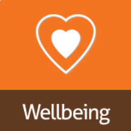
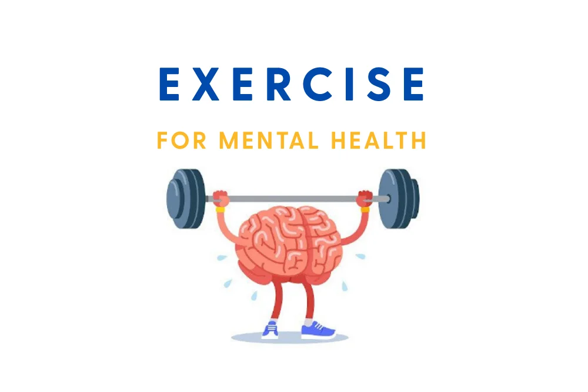

Managing Mental Health Issues
Coping with Mental Health is a struggle in its own sense, but sometimes pulling yourself together, and reaching out for support is harder for some individuals. Finding the correct support is a task in it's own sense, and can be difficult to find somebody or something, which you can relate to, and feel safe doing so.
Below, are various strategies and methodoligies you can use to combat your Mental Health Challenges. These include, University Specific Guidance, and also General Strategies, accessible by everyone:University-Specific Strategies
Universities often provide resources to support students' mental health. These include:
- Counseling Services: Many universities offer free or low-cost counseling services, in which a student can get professional and advice tailored to their needs in order to help them with their struggles.
- Support Groups: Majority of the Universities around the Country, have various groups and clubs which Students can join, these clubs and societies can vary from Cultural, Religion, Sports, Games, Education, and also just for Mental Health, and too provide a safe space for those who are facing challenges which others might also be facing.
- Academic Accommodations: In many universites accross the Country, students have the ability to request extensions on Course work, Assignments, Accommodations and various other things for Mental Health Reasons, as long as they is sufficient evidence, and it has a reached a certain level.
General Coping Strategies
In addition to university resources, students can adopt general strategies to improve their mental health:
- Practice Mindfulness: Techniques like meditation and deep breathing can reduce stress.
- Exercise Regularly: Physical activity boosts mood and reduces anxiety.
- Maintain a Healthy Routine: Eating well, sleeping enough, and managing time effectively can improve mental health.
- Seek Social Support: Talking to friends, family, or a therapist can provide emotional relief.
Self-Help Resources
There are many self-help resources available, such as:
- Books and articles on mental health.
- Online courses and workshops.
- Mental health apps (e.g., Headspace, Calm).